نصمّم وننفّذ مشاريع اجتماعية تخلق الفرص.
فريق تقني متخصص في تصميم المشاريع وتنفيذها ومتابعتها وتقييمها لصالح الإدارات والجهات والمؤسسات.
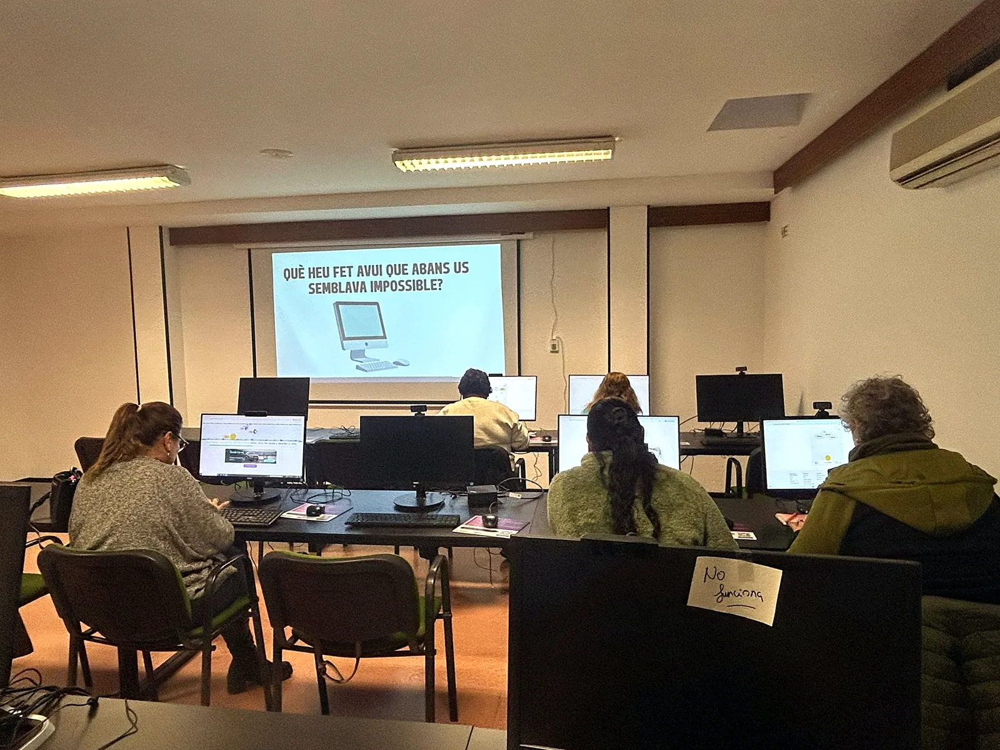
شبكات واعتمادات تعزّز قدرتنا
لوغوس عضو في شبكات مرجعية ولديها اعتمادات مرتبطة بنشاطها الاجتماعي والتدريبي.
قدرات متنوعة لواقع مختلف.
نعمل في مجالات اجتماعية وتدريبية مختلفة بنفس المنهج: نفهم الحاجة، ونبني استجابة مفيدة، ونطبّقها على أرض الواقع.
الإدماج الاجتماعي والمهني
توجيه ومرافقة وتنمية للكفاءات ومسارات لتحسين فرص التشغيل وتسهيل الوصول إلى سوق العمل.
- لمن هو موجّه
- الأشخاص المعرّضون للإقصاء، مع إعطاء الأولوية للنساء والشباب: البطالة طويلة الأمد، والفئات العمرية الأكثر صعوبة، والشباب قليلو الخبرة أو التكوين.
- كيف نعمل
- توجيه ومرافقة بأدوات مناسبة لكل حالة وخطة عمل فردية: خدمات متكاملة للتشغيل، ومسارات إدماج، ووكالات توظيف، وتدابير نشطة.
- مشاريع ذات صلة
- خدمة الإدماج الشامل · برنامج دعم النساء في الريف والمدينة · مؤسسات الإدماج Intress Creix وAptos.
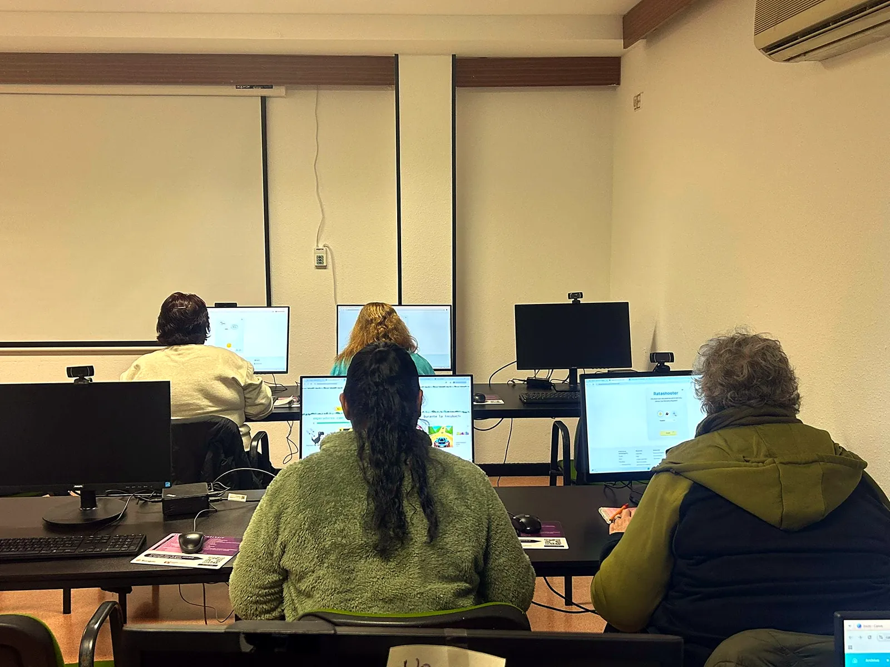
عرض المشاريعيمكننا تولّي دورة المشروع بأكملها.
لا نكتفي بمرحلة التحديد. يمكننا المشاركة في جميع المراحل اللازمة، من التحليل الأولي حتى المتابعة والتقييم.
- التشخيص
نحلّل الواقع ونرصد الاحتياجات ونحدّد الفرص.
- التصميم
نحدّد الأهداف والإجراءات والموارد وهيكلًا قابلًا للتنفيذ.
- التنفيذ
ننفّذ الأنشطة بتنسيق ومعايير تقنية وجودة.
- المتابعة
نتابع باستمرار لرصد الانحرافات وتعديل المشروع.
- التقييم
نقيّم النتائج والأثر والدروس المستفادة لتحسين الأنشطة المستقبلية.
نتكيّف مع كل جهة: يمكننا تولّي المشروع كاملًا أو دعم فريقكم في المراحل التي تحتاجونها فقط.
عندما تحتاجون إلى قدرة تقنية، ننضمّ إليكم.
يمكن لـ Logos الانضمام كدعم تقني خارجي لتعزيز الفرق، أو تولّي مراحل محددة من المشروع، أو تقديم الخبرة المتخصصة عندما لا تتوفر لديكم الموارد الداخلية اللازمة.
- 01دعم مرن. نتكيّف مع مرحلة المشروع التي تحتاجون فيها إلى دعم.
- 02قدرة تقنية. نقدّم خبرة عملية في المشاريع الاجتماعية والتدريبية.
- 03عمل منسّق. نعمل مع الفرق والخدمات والفاعلين في المنطقة.
خبرة واعتمادات يمكن التحقق منها.
يرتبط نشاطنا بسجلات وشبكات وجوائز تشهد على المسيرة التقنية والاجتماعية لـ Logos.
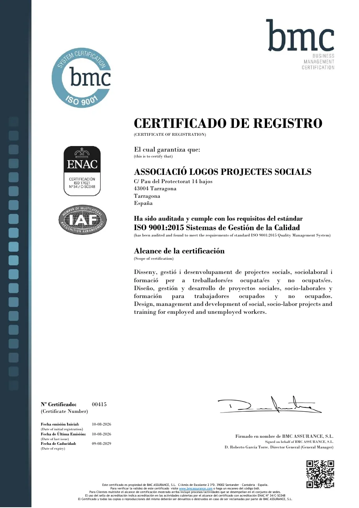
تصميم وإدارة وتطوير مشاريع اجتماعية ومهنية وتدريبية. الشهادة رقم 00415، سارية حتى 2029.
أنجز إجراءاتك مع Logos Acompanya
إذا كنت تحتاج إلى مساعدة في إجراء إداري أو منحة أو البحث عن عمل أو دورة، ستجد في Logos Acompanya، خطوة بخطوة ومن هاتفك، ما يجب فعله والوثائق المطلوبة وكيفية حجز موعد مع فريقنا. متاح بالكتالونية والإسبانية.
لن تطلب منك لوغوس أبدًا مالًا أو كلمات مرور.
قنواتنا الرسمية الوحيدة هي هذا الموقع، والهاتف 977 61 57 23، والجوال وواتساب 630 46 15 60، والبريد الإلكتروني info@logostgn.cat ومقرّنا في Carrer Pau del Protectorat, 14. إذا تواصل معك أحد باسمنا عبر وسيلة أخرى، فكن حذرًا واتصل بنا.
تغيير الخطاب الاجتماعي تجاه الفئات الأكثر هشاشة.
لوغوس جمعية غير ربحية تأسست لتعزيز الإدماج الاجتماعي والمهني للفئات المعرّضة للخطر في منطقة Camp de Tarragona، ويضم فريقها مختصين من مجالات مختلفة: مربّون، وتربويون، وعلماء أنثروبولوجيا…
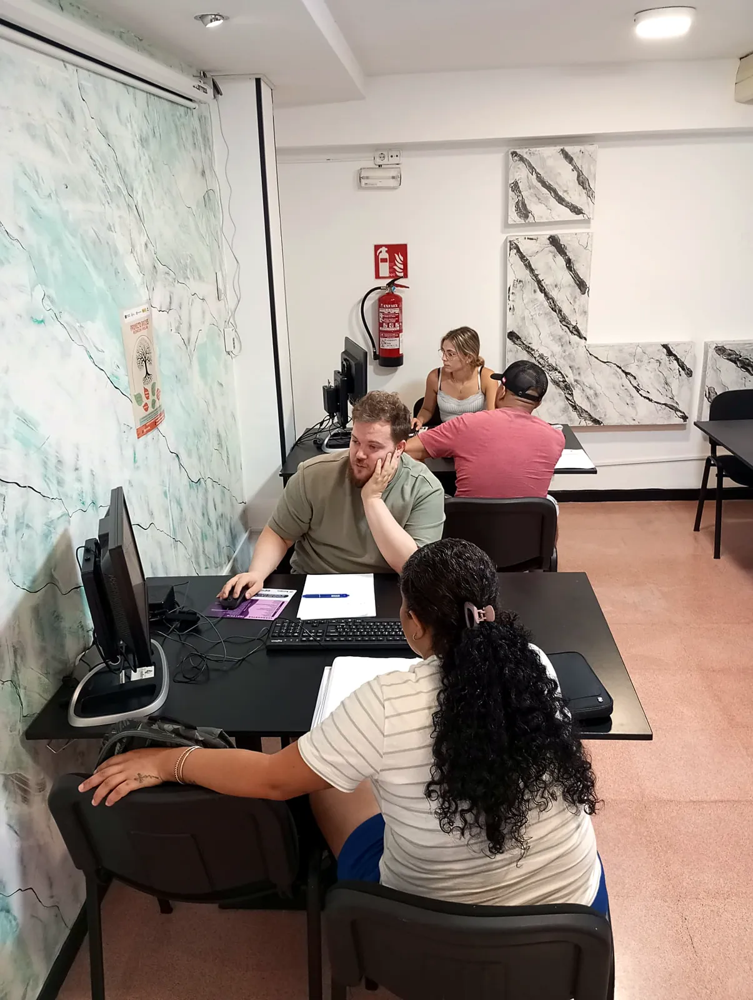
تاريخنا
تعود بدايات لوغوس إلى عام 2015، عندما لاحظت المجموعة المؤسسة نقصًا في الموارد في منطقة Camp de Tarragona لخدمة فئة واسعة من الناس بعد إغلاق عدة خدمات وجهات. وُلدت الجمعية لسدّ هذا الفراغ.
ننطلق من خبرة جهات أخرى نتشارك معها المؤسسين والمختصين، مثل جمعية أبتوس للتشغيل والنهوض الاجتماعي التي كانت رائدة في طراغونة لمدة 20 عامًا في إدماج الأشخاص المعرّضين للإقصاء وتدريبهم.
المهمة والهدف
تقديم حلول لمشاكل التشغيل لدى الفئات الأكثر حرمانًا، من خلال تصميم المشاريع والتدريب وإدارتها وتقديمها من أجل إدماجهم الاجتماعي والمهني.
نريد تغيير الخطاب الاجتماعي تجاه هذه الفئات وتحويله، من خلال تنميتها وتمكينها.
إلى جانب مشاريعنا الخاصة، نطوّر وندير برامج وأنشطة لجهات ومؤسسات وشركات أخرى.
الاعتمادات والتسجيلات
نظام إدارة جودة معتمد وفق ISO 9001:2015 (الشهادة رقم 00415، BMC Assurance، سارية حتى 9 أغسطس 2029).
سجل وزارة العدل الكتالونية رقم 63363 (2017) · السجل الوطني للجمعيات، القسم الأول، رقم 625615 (2021) · الرقم الضريبي G55725436.
سجل جهات الخدمات الاجتماعية (RESES) رقم E05601، وخدمة الدعم الرقمي مسجّلة برقم S11009. مركز شريك لاختبارات ACTIC.
الجوائز
جائزة Talent من غرفة التجارة لعام 2021 في فئة الاستدامة والغذاء عن مشروع Agrolabora21 لتدريب الشباب المعرّضين للخطر وإدماجهم مهنيًا من خلال إنشاء حدائق زراعية، دعمًا للاقتصاد الأخضر والدائري.
طريقة عملنا
نعتبر العمل وسيلة وهدفًا في آن واحد: نرافق كل شخص بأدوات تناسب وضعه ليتمكن من دخول سوق العمل ومواصلة تحسين فرصه بشكل مستقل.
نعمل بالشراكة مع الخدمات والإدارات والجهات في المنطقة لتوحيد الجهود وتعزيز الأثر.
مشاريعنا
مشاريع اجتماعية تصل إلى المنطقة وتتحوّل إلى فرص ملموسة. عرض جميع المشاريع
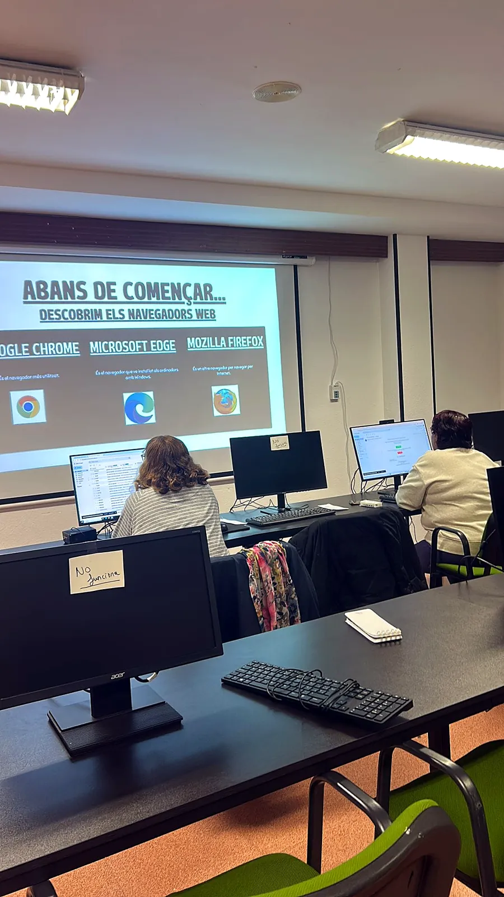
Logos Social Up Digital
نساعد المواطنين على إنجاز الإجراءات الرقمية مع الإدارة: المواعيد، وهوية idCAT الرقمية، والمنح، وغير ذلك الكثير.
عرض التفاصيل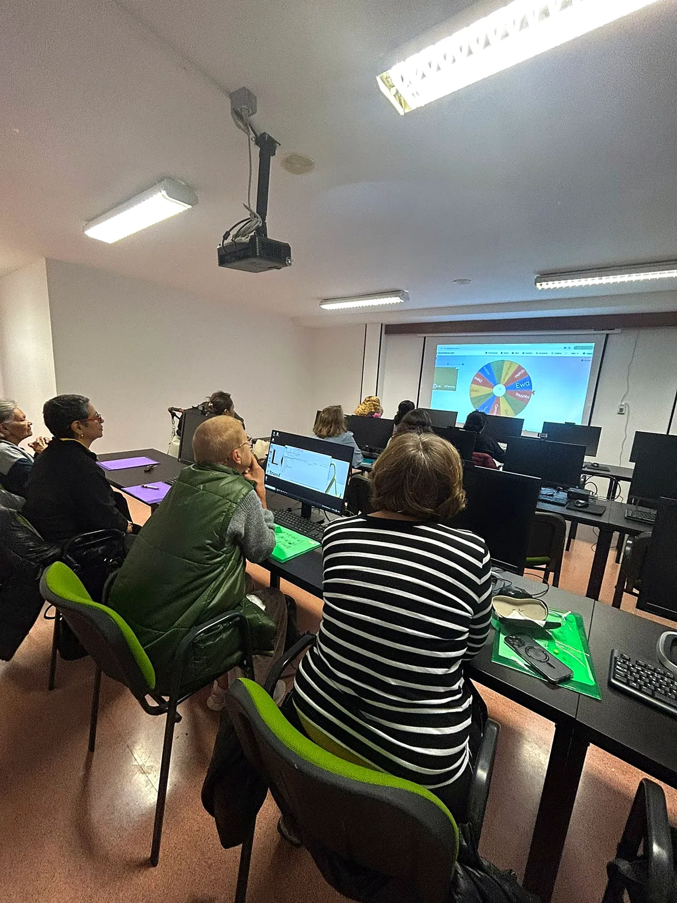
برنامج دعم النساء في الريف والمدينة
مسارات توجيه مهني لـ59 امرأة من ست بلديات في منطقة Camp de Tarragona.
عرض التفاصيل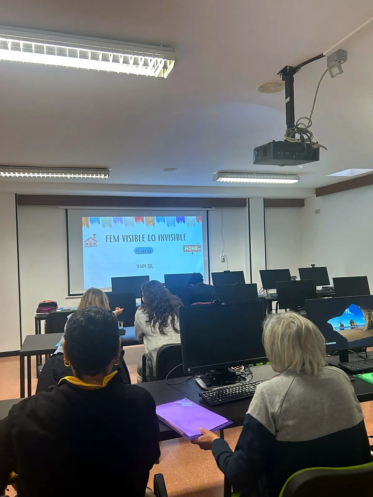
Xàldiga
منظور النوع الاجتماعي، واللغة الشاملة، والوقاية من العنف القائم على النوع، وخطط المساواة للشركات.
عرض التفاصيلأثرنا
هل تريد متابعة مستجدات لوغوس؟
الدورات والأنشطة والإعلانات والأخبار: ننشرها كل أسبوع على شبكاتنا الرسمية. ادخل إلى الشبكة التي تستخدمها وتابعنا.
مشاريع بتمويل مشترك من
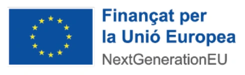
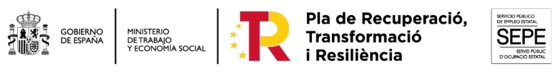
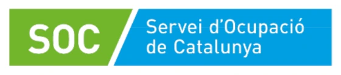
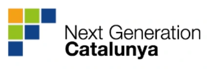
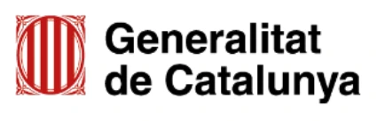
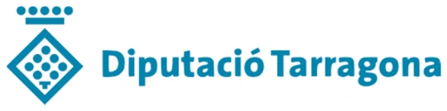
تعرض كل صفحة مشروع شعارات الجهات المموّلة له.
مع من بنينا مشاريع ذات أثر
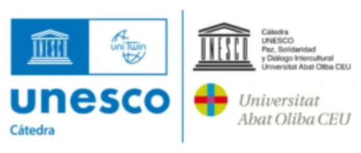
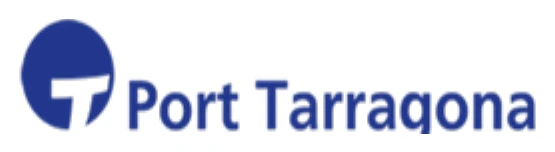
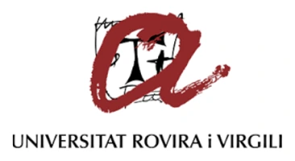
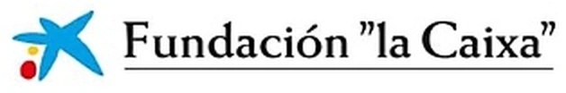
شبكة متنوعة وملتزمة وفاعلة
منذ 2021 تعاونّا مع أكثر من 70 جهة وإدارة وجامعة وشركة.
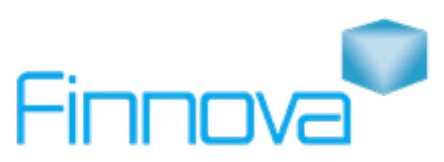
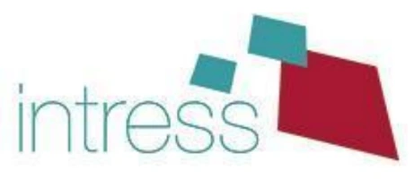
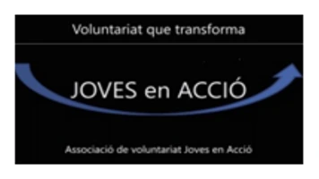
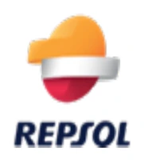
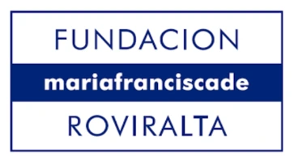
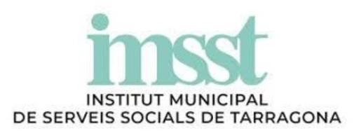
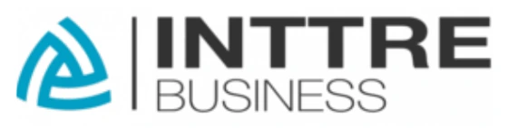
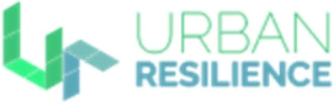
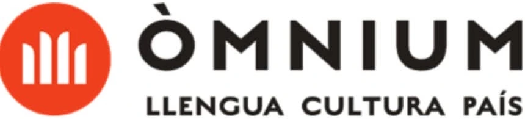
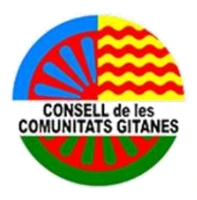
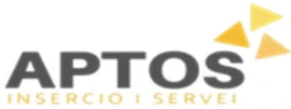
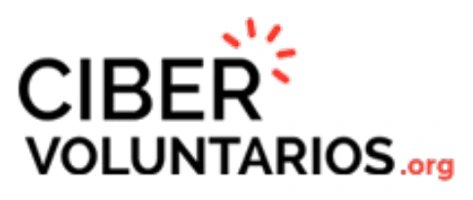
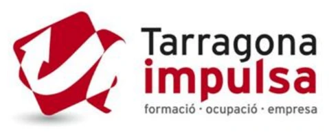
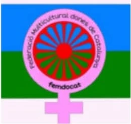
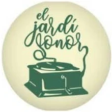
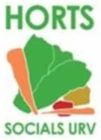
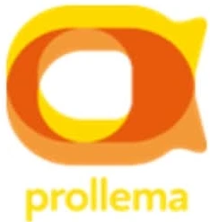
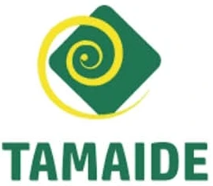
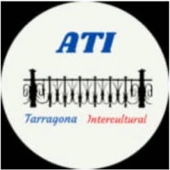
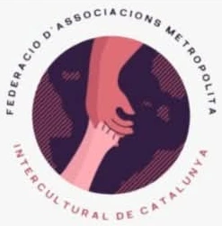
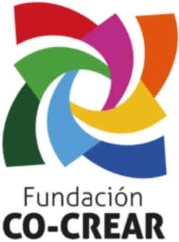
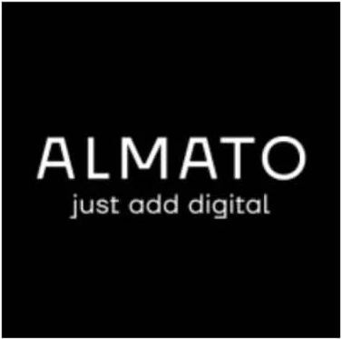
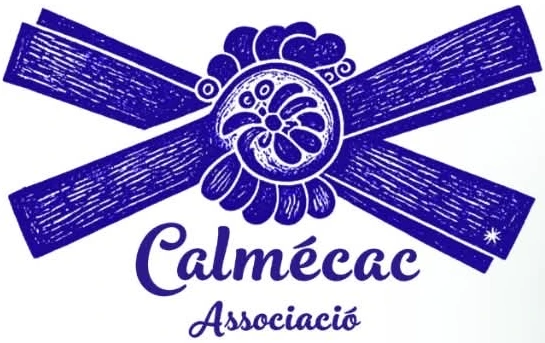
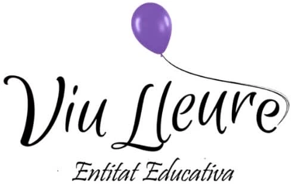
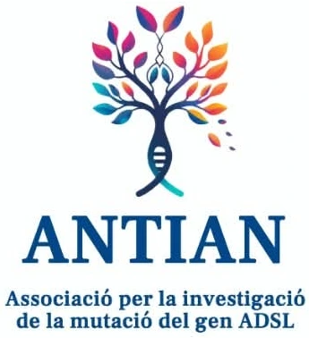
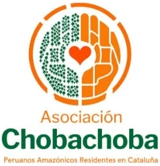
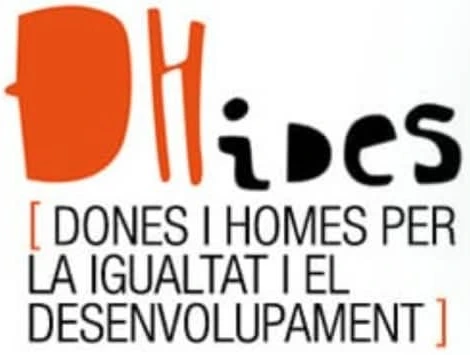
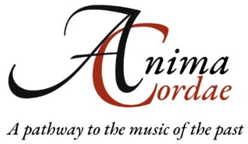
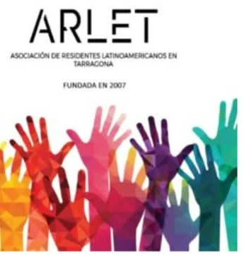
الشبكات والمنصات التي ننتمي إليها
شبكة كتالونية لجمعيات التطوع الاجتماعي (voluntaris.cat).
اتحاد جمعيات تعمل مع الفئات المعرّضة للإقصاء من أجل تكافؤ الفرص ومجتمع أكثر عدلًا.
ممارسات جيدة للوقاية من التنمّر والتنمّر الإلكتروني بين الأطفال والمراهقين واكتشافه والتصدي له.
نوعّي ضد العنف تجاه النساء ونطالب بعدم التسامح مطلقًا مع الإساءة.
معرفة وتعاون من أجل استخدامات للوقت أكثر صحة ومساواة واستدامة.
الاتحاد متعدد الثقافات لنساء كتالونيا. لوغوس عضو مؤسس ومسؤولة عن الجانب التقني.
لنبدأ بمحادثة أولى
إذا أردتم تقييم مشروع أو تعزيز فريق أو دراسة حاجة محددة، اتصلوا بنا أو اكتبوا لنا. سنشرح لكم طريقة عملنا ونحدّد معكم أفضل خطوة تالية.